|
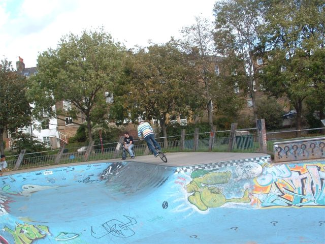 29th October Mark at the Park. This is Mark trying a tyre tap in London. I think he finds them almost as hard as I do which is reassuring. Mark was there at lunchtime yesterday too so we had some fun in a packed cos of half term skatepark. Riding with Mark is pretty fun as he pushes me a bit because he trys things. I like to learn things at my own pace sometimes but then sometimes it is good to have someone who pushes you to go a bit higher or try something a bit bigger. It seems that trails are back in fashion again. The new dig is full of trails and sprocket grind (which has a good new look) has some trails building pictures. THSHVLLD has a load more digging pictures but that's nothing new for them. People have been going on for ages about how trails are not fashionable and it's all street everywhere, but maybe things are changing. It's probably all Joe A's fault. My motherboard has arrived so the moment of truth will be tonight. Either my computer will work again or I will go crazy. 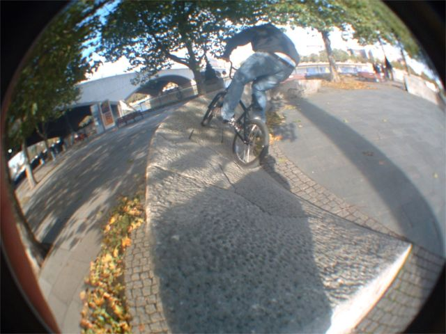 28th October I like this angle. I am a bit bored of riding the stone circle now though. Next time I am going to try and air out of it or something just to make it a bit more interesting. I am giving Tim driving lessons again tonight. I am making him pay me. One hour driving lesson for one hour digging. Seems fair to me. Maybe Sittingbourne at the weekend, and Burham on Saturday afternoon if it's not raining this week. Although having said that, my motherboard is coming today, so I might have to spend all weekend failing to get that to work. 27th October Lunchtime sessions at the park have been fun. These are some photos
that Chris took: 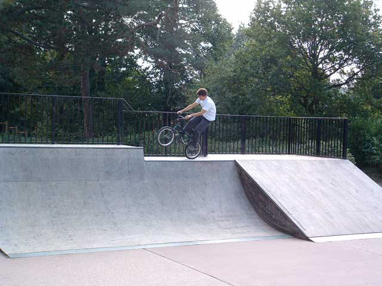 Jamie and Ryan and maybe Mick from Paddock Wood were there yesterday too. Jamie came off pretty badly on the box becasue it was wet and slippery. He opened up his chin quite badly and it clearly needed stiches but he refused to go to the hospital. Then I had to leave so I hope he got it fixed up. I received this today from Tom at Dig Magazine. He's a nice guy: Ben, 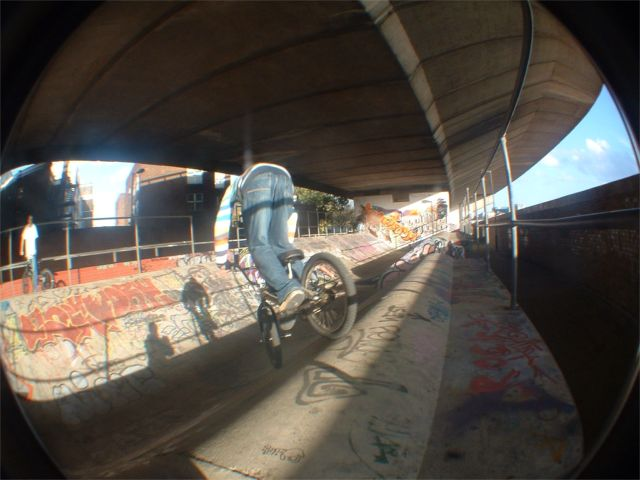 26th October That's Mark coming out of a tyre tap. Very bad photo timing. This is Meanwhile Gardens 2 which has to be one of the hardest places in the world to do any stunts at. Digging is getting done slowly. I am aiming for half a jump a week, which by my calculations means good trails in the summer, but I have been doing this for long enough to know that it never turns out that way. I wonder what will go wrong this time. Plans for a Headcorn skatepark are slowly starting to move as well but that will still be years I guess. Councils are slow beasts. It will probably be concrete becasue it's hard to burn. 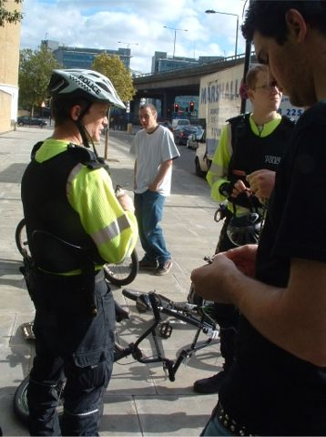 25th OctoberWe went to London on Thursday. When I say we I mean me, Nigel, Tom, Chris and Mark. I managed to wangle a day off work so we made some plans and hoped it didn't rain. This picture was taken somewhere near Paddington. Nigel's chain snapped which hurt a lot and then after my failed attempts at fixing it with a brick we found a pair of policemen on bikes who lent us a chain tool to fix it. This is illustrated brilliantly in this snap shot which I took. That's Tom on the right playing with some chain. Chris is in the background trying not to look too shady in front of the po lice and then the two coppers listening to Nigel telling them how to fix a chain. We rode a lot of different spots but they didn't let us into playstation, sorry, baysixy6.
I got some pictures off my camera at Tim's house but they are just a random selection as his computer is painfully slow. 23rd October 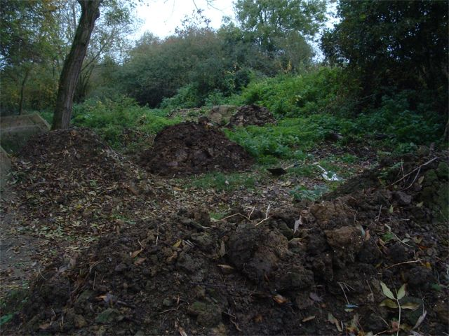 Digging season again. 22nd October It will be nice to have some riding pictures on this website though. This weekend, who knows, maybe Burham in the afternoon? Up for that Nigel / anyone? 21st October This is a picture of me fixing my car. I spend quite a lot of time
fixing things because things tend to break a lot and I am too tight to pay
someone else to do it. Tonight I will be fixing my bike. 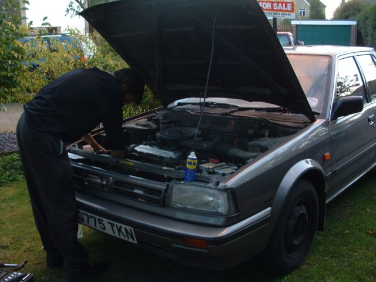 I fixed my car good. It was making a squeeling noise all the time, so I practiced some of my mechanical magic and it's all good for another ten thousand miles. 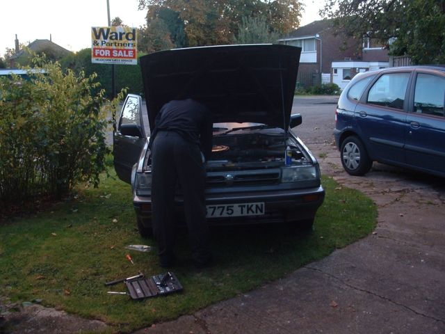 A few weeks ago I randomly met someone I used to go to school with who also works in Maidstone so I have been giving him a lift to work (Peter - sign the book you lazy bum). Then my computer broke, and Peter knows about computers so he is helping me fix it.20th October Tomorrow. Be at Waterloo at 10ish or at Southbank soon after. See you there. I would leave a mobile number so you could ring me but I don't have one. I'll try and borrow beckys 07979227574 but I can't guarantee that I will remember. Old job: 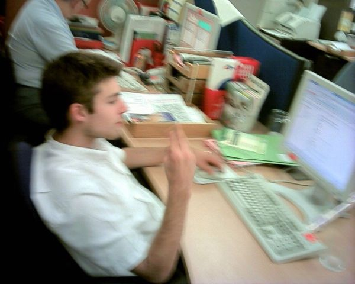 This is the old ladies who sat behind me and monitered my internet use. It was these people who I had to be careful of incase they saw the porn that someone had put on the prettyshady book. I miss their banter now though. 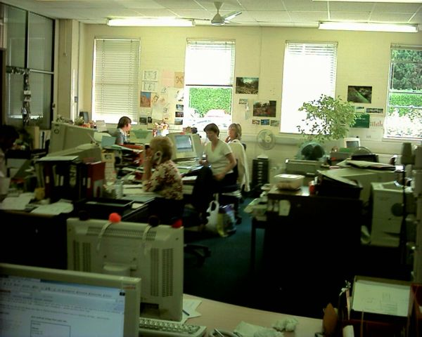 New job: 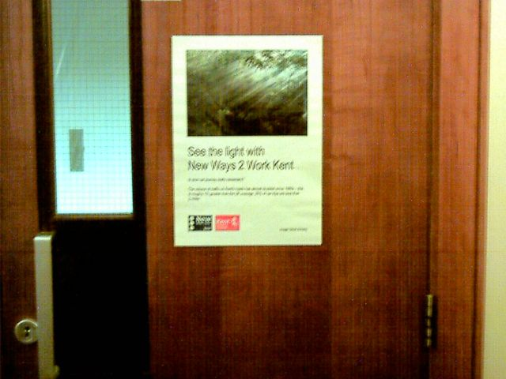 COME TO LONDON Well it's happening again, except without the hotel rooms and the naked Seb I hope. The plan is to meet up at southbank on Thursday morning then ride southbank for a bit and head over to playstation, sorry baysixty6. From there we can see what happens but if its dry then we will probably ride that wierd brick tranny street park thing and meanwhile 3 and maybe cantelows or brixton who knows where the day will take us. If it's dry then probably just baysixty6 and southbank all day. So the point is that you should come too. Me and Nigel and Tom from Tenterden. Adam - if you've not ridden that brick thingy yet then come and bring Maddams or other skater people, Seb - take the day off school haha, Martin - I'll ring you if I remember, Bambi should come, Chris and Mark should come - bring some Paddock Wood ghetto kids, Mat should come - get the day off and bring your MTB!, anyone else who is reading this, if I have forgotton you, or if I don't know you, come anyway. 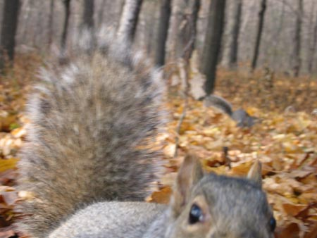 18th OctoberSquirrels are amazing. I was at the trails a while ago and I saw this squirrel just sitting on a branch watching me, so just sit there for a bit and it runs up the tree and across the branches between the trees. It was running across really tiny branches, and just on the leaves a a few points which was pretty amazing. Then on my way home I saw another one by the side of the road and when it saw me it jumped from the side of the road, and up a tree. It must have jumped about 3 foot forwards and 2 foot upwards at the same time. For a squirrel who must be between 6 and 8 inches long then that's a long way. That's like you or me jumping onto the top of our house from the floor. 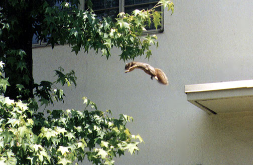 Squirrels have been entertaining me a lot recently. I could see one out of the window when I was in a boring meeting recently so I was watching it instead of listening to the meeting which was much more interesting. I rmember last year when I was moving some earth from an old berm that
I came across a stash of acorns which the squirrel had put there. I moved
them out the way so that he would have some food in the winter. 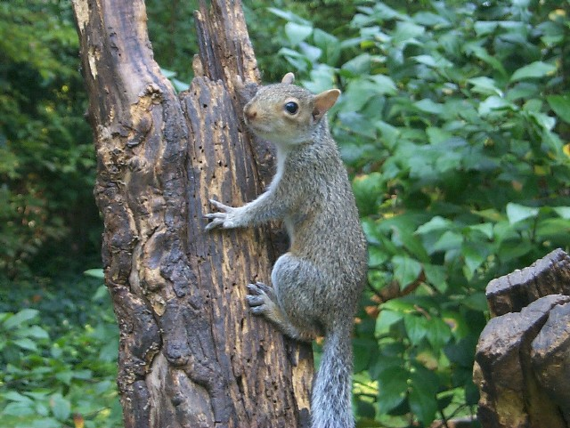 16th October 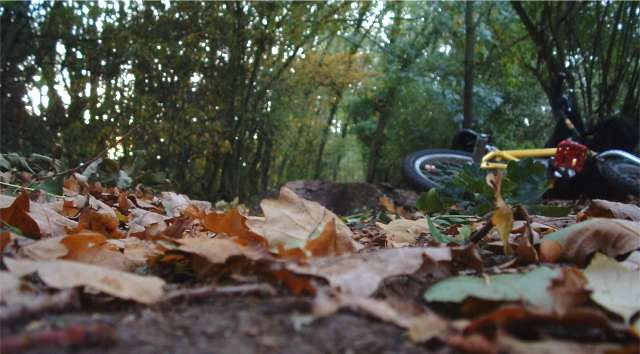
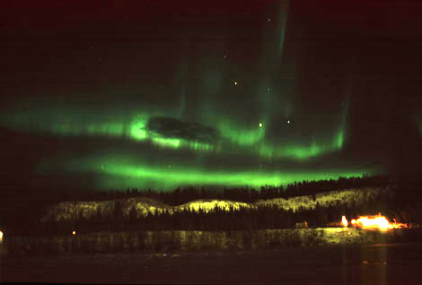 14th OctoberThere was an explosion on the sun last night which meant that stuff was flying all over the place, the effect of which was that the northern lights (Aurora Borealis) were very bright. Well me and Tim went out for a walk at 10 last night and there was a faint glow on the horizon which looked less like this ---> and more like maidstone on the horizon but anyway. Look at this to see how cool it can look, and here to find out more. I have day off next week so I want to ride but Nigel's email is bouncing. Leave a message on the book? 13th October Just testing! <- Shoot me. Went to the park on Monday with Chris. Was pretty fun but lunchtime is always way too short. Then it started raining pretty soon and hasn't stopped since. It looks like that might be about it for trails this year. This is about the only time of year that I ride street so that might be happening, but apart from that I think it's time to go to some gigs. 12th OctoberI feel sick. Physically sick. This week I have been designing a leaflet at work. I have been working pretty hard on the layout trying to get a good balance of white space, keeping it looking clean, simple and professional. Then today I give it to the person that I was doing it for. They asked me to send them the file so the could make a few minor changes. This is what it looked like when I had finished with it: stpafter.bmp <-- LINK HAS BEEN CHANGED AND IS NOW RIGHTThis is what it looks like now: stpbefore.bmp <-- LINK HAS BEEN CHANGED AND IS NOW RIGHT Am I going crazy? 11th October There was a bit of riding at the weekend but the camera barely came out. It's hard to take pictures of yourself. The trampoline bike has been ressurected so that is fun again too. Tim had his plaster off on Friday. The doctors told him no riding for
3-4 months this time, which is more than twice as long as they said last
time, so they know what they are talking about then? And they said that
won't take the plate out, despite saying that they would before. I am
going to do some research. 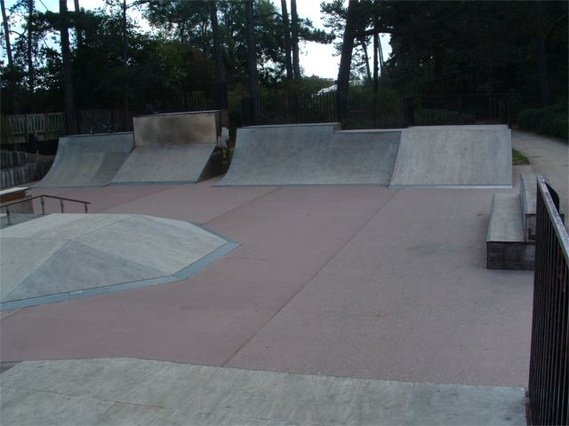 Lunchtime today I am going to Maidstone Skatepark. This is what it looked like this time last week. MPT. That box is really short, but it's still hard to clear even if you air the quaters over a foot you still need to pedal. 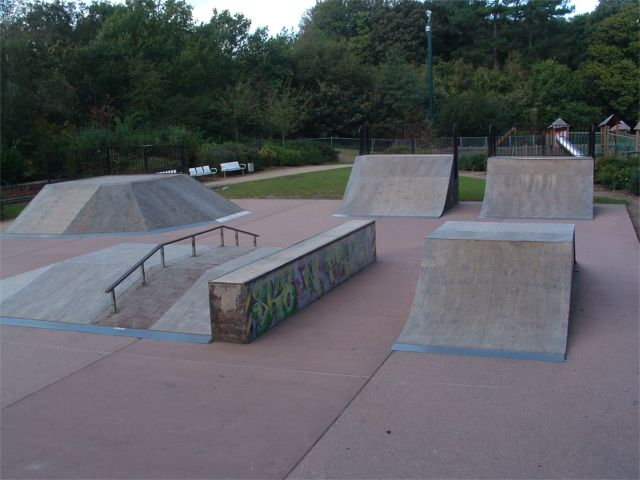
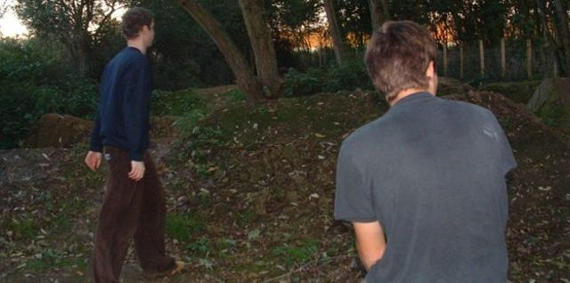 In other news, I have gone back to my old freind the guitar which is fun so I will be entertained all winter. Tim and Rudi have taken to hanging out with the village tramp. Basically they don't have jobs so they bum around the village playing hackysack all day and talking about physics with a drunk tramp. Give it 6 months and they will be on the street with one pair of clothes living in a tent and claiming benefits without an address. Good luck boys. 8th October 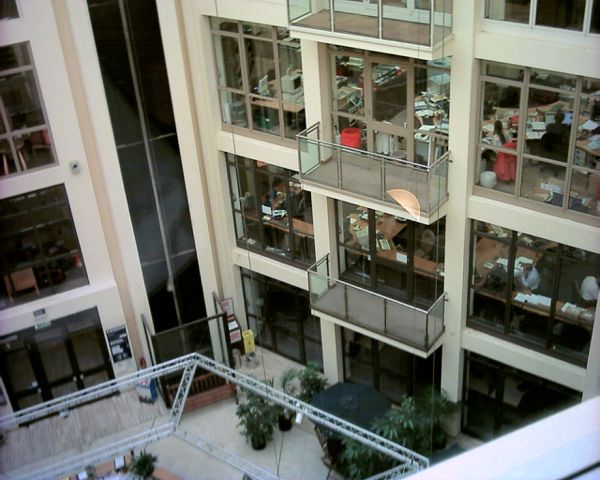 the shovel load has some movies up and a nice new update With all this Wisley stuff going on it makes you think about your responsibilities as a rider. Sounds like a strange thing to be taking about, but if ride it makes you part of a group of people whether you like it or not. This means that the way you act can have a big effect on the way riders are percieved. If you drop litter and are abusive to people then this creates the impression that everyone who rides is like that. Then when the landowner turns up at the trails and sees rubbish everwhere and gets loads of abuse, is it suprising that the decide to plough. 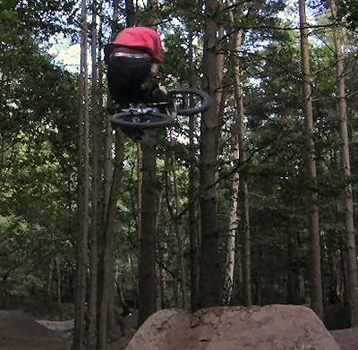 Respect will get you a long way. Respecting someone doesn't mean you like them. That's the attitude you should have to land owners and the council. Be polite. Sending abusive emails is only going to make them want to get their bulldozer out. 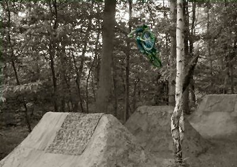 Respecting the trails is important to, and it's not just about not leaving your rubbish there. It has taken someone a long time to move that mud and if enough idiots trample all over it then it won't be there anymore so be careful. 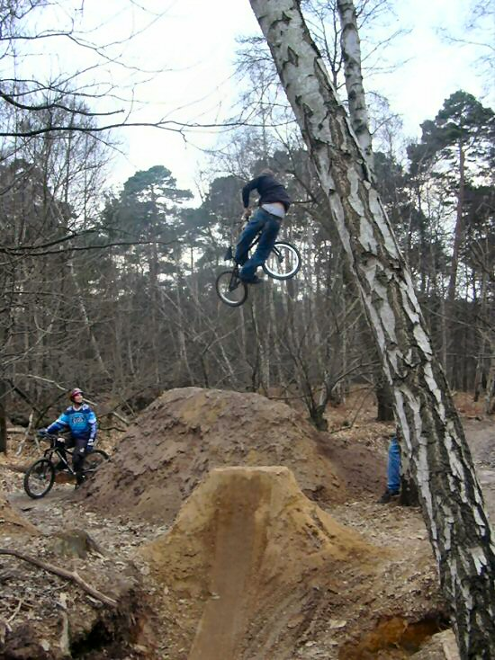 More important than any of that though it this: DO NOT SUE. Please don't ever ever sue anyone for anything that happened when you are riding. That is the most stupid thing you can ever do. The effect of this is simply to get park/trails/street spot taken down for good. If I ever meet anyone who has sued someone for something they did on a bike I think I will sue them for ruining it for the rest of them. Either that or put a hammer in their ear. DONT SUE KIDS. I stole these pictures from the prettyshady media. It's all still
there. 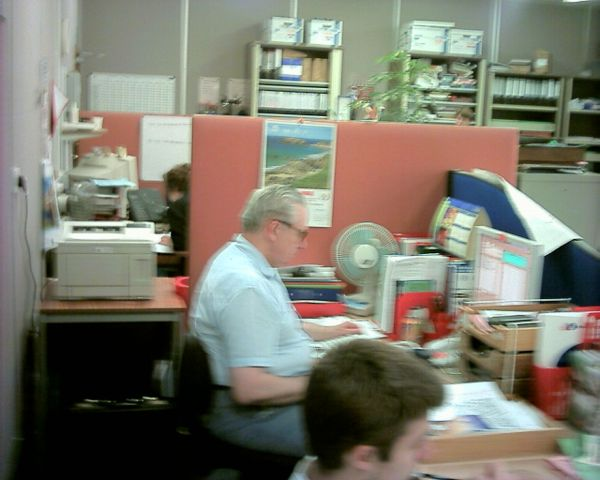 I work with Roy Orbison. 6th October The park was empty at lunchtime so I rode for an hour non-stop nearly.
I think this is the last of the hoilday pictures which I am using
up. 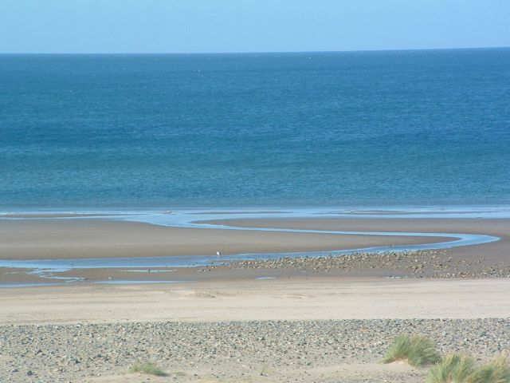 5th October Becky took some pictures which you have probably already seen. Click to
enlarge: 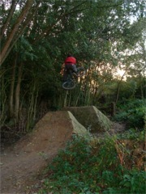 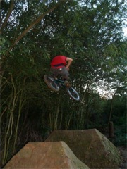 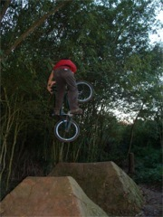 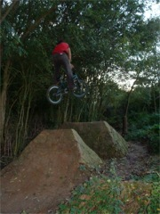 Recent media: Some steath pictures from the comic shop. I was given some comics that
I thought might be worth some money so I took them to the comic shop. I
was a lot like the simpsons. This is the counter with comics priced at £20
or £40 and lots of little collectable plastic modals of half famous
people. 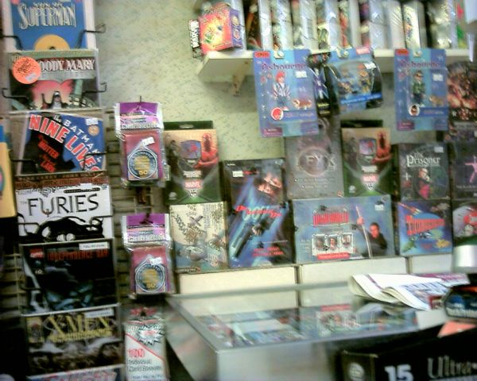 In this picture on the far right we have the shop keeper. he was quite large, and he was demonstrating his guns to the other people. He said my comics were not worth anything, but I gave them to him because I don't want them so I thought it might give him some pleasure. 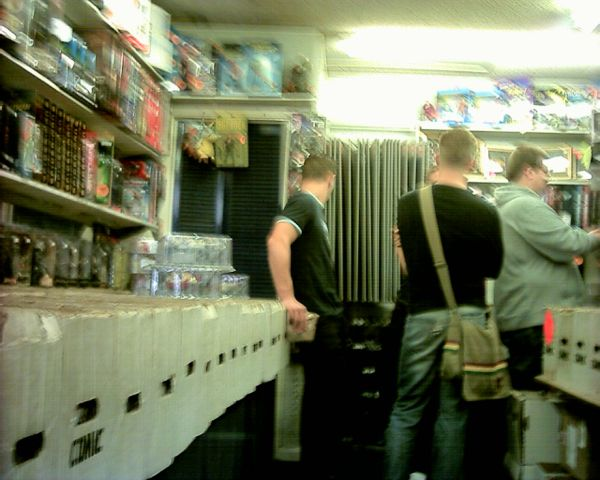 4th October 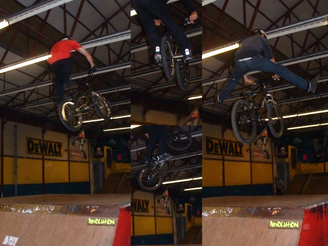 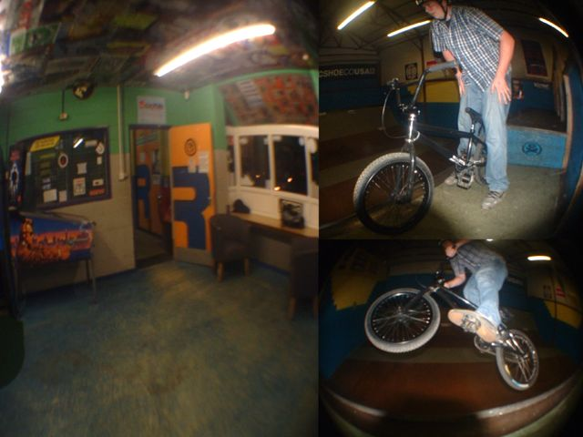 Then above: Revolution is a lot more like a real place than Sittingbourne, by which I mean they have stuff like arcade games and things which I don't really like as the could put ramps in the there. On the right is Nigel on the mini. The good thing about both of the park is that they were pretty quiet which was suprising. At Sittingbourne I hardly took any pictures as well and they are still on my camera. I bascially spent the whole time diving into the foam pit as it is being dismantled TODAY. The foam cost £500 wow. more than a trampoline. I met Martin from Sutton Valence at Sittingbourne and his dad was there taking some pictures. He is an amatur photographer and he said he likes some of the pictures on this site. He specifically mentioned one at Burham, so Rebekah will be please with that. It's nice to have someone praise your website rather than slating it all the time. The rest of the weekend was wet but becky did get some good trails photos anyway, which might be up soonish. Prettyshady seems to have died so go to theshovelload.
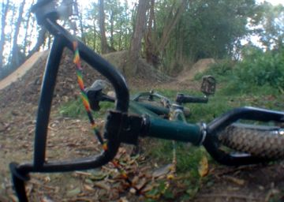 2nd OctoberTomorrow's update is coming early as I will be busy tomorrow probably. The shopping came to £52ish by the way so I think mat was close but no crisps. I rode the park at lunchtime again. It was fun. The other day I saw 3 people from my old school in the same day. Not that strange you might think, but I hadn't seen anyone before that for about 3 or 4 years. There has been talk of ghetto indoor parks but finding places is hard.
"Every day riding is a day stolen from old man winter". -ride(your)bmx. |


{kind=link}
{kind=link}
{kind=link}
{kind=link}
{kind=link}
{kind=link}
{kind=link}